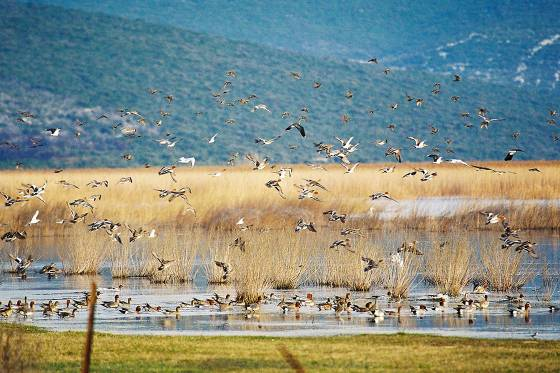

Because of its rare natural habitats, fresh water springs and biodiversity, Vransko Lake and its surroundings have been declared a Nature Park on July 21st, 1999. The Park limits are between Pirovac and Pakoštane. It stretches across 57 km², 30,02km² of that being the lake area itself, which stretches in direction north-west to the south-east, parallel with the sea coast, from which it is, in some places, less than a kilometre apart. The lake is unique because of its position and characteristics, not only in Croatia, but in other parts of Europe too. It is, in fact, a karst valley filled with brackish water as well as cryptodepression, which means that a portion of the lake lies below sea level. The dominating characteristic of the park is its special Ornithological reserve, which received its title in 1983 because of its well preserved huge reed-patch in the north-western part of the lake as well for its immense biodiversity, and extraordinary scientific and ecological value. The reserve has been included in the list of Important Bird Areas in Europe and became Ramsar site in 2013.  It is an unusual compromise and link between land and water which offers a refuge to numerous species of plants and animals, offering them all that is necessary for life. Overgrown with grass, sedge, rush and reed, it looks like field with shallow ponds scattered all over it. Covered with permanent flowers of vibrant colours it offers home to many butterflies, dragonflies and other different insects which enable the birds to stay in the reserve and the Park throughout the year. Hidden in the reed, bird lovers can experience watching the birds nesting and taking care of their chicks. Vransko Lake is a hot-spot with tremendous diversity of ornithofauna with 256 recorded bird species, of which 102 nest in the park area. Four bird species that nest here are considered endangered on the European level and seven on national level. For some of these birds Vransko Lake is the only nesting area in the entire Mediterranean part of Croatia. The park area is also an important resting and feeding place for a whole range of endangered European species. More than 100 000 waterbirds come here to spend the winter.